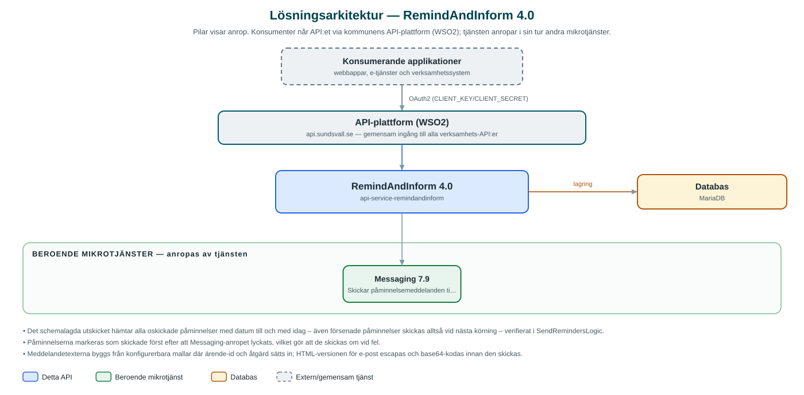

RemindAndInform
Registrerar påminnelser kopplade till ärenden och skickar ut dem automatiskt vid önskad tidpunkt via kommunens meddelandetjänst.
Om API:et
RemindAndInform låter kommunens verksamhetssystem registrera påminnelser åt invånare och företag, till exempel om en åtgärd som ska utföras i ett ärende. Varje påminnelse kopplas till en part (partyId), ett ärende och ett påminnelsedatum, och kan förses med en beskrivning av vad som ska göras.
En schemalagd process körs dagligen och skickar alla påminnelser vars datum passerats och som ännu inte skickats. Utskicket går via kommunens Messaging-tjänst, som väljer kanal utifrån mottagarens kontaktinställningar – meddelandet innehåller både en kort textversion och en HTML-formaterad e-postversion. Skickade påminnelser markeras som utskickade så att de inte skickas igen.
Påminnelser kan skapas, uppdateras, hämtas och tas bort via API:et, listas per part, och utskicket kan även utlösas manuellt för ett angivet datum.
Det här gör API:et
- Registrera påminnelser – Påminnelser skapas med part, ärendereferens, åtgärdsbeskrivning och påminnelsedatum, och kan uppdateras eller tas bort.
- Automatiskt utskick – En daglig schemalagd process skickar alla oskickade påminnelser vars datum passerats, per kommun.
- Utskick via Messaging – Påminnelserna levereras genom Messaging-tjänsten som väljer kanal utifrån mottagarens kontaktinställningar, med både text- och HTML-version.
- Manuellt utlöst utskick – Utskicket kan även triggas via API:et för ett angivet datum, till exempel för omkörning.
- Uppslag per part – Alla påminnelser för en viss part (partyId) kan listas.
API-dokumentation
API:ets samtliga resurser, parametrar och datamodeller finns beskrivna i en OpenAPI-specifikation som är hämtad ur källkodsförrådet. Den kan utforskas interaktivt i Swagger UI eller laddas ner som YAML.
Teknisk dokumentation
Nedan beskrivs hur tjänsten är uppbyggd, vilka andra tjänster den anropar och vad som krävs för att driftsätta den. Informationen är härledd ur källkoden och dess konfiguration på GitHub.
Arkitektur

API:et är en mikrotjänst (Java 25, Spring Boot via kommunens gemensamma tjänsteplattform dept44 (8.0.8), byggd med Maven). Konsumenter når tjänsten via kommunens gemensamma API-plattform (WSO2) på api.sundsvall.se – tjänsten anropas aldrig direkt. Tjänsten anropar i sin tur andra mikrotjänster i kommunens tjänstelandskap. Lagring: MariaDB med Flyway-migrationer; påminnelser lagras med part, ärende, datum och utskicksstatus.
Teknikstack
- Språk: Java 25
- Ramverk: Spring Boot via kommunens gemensamma tjänsteplattform dept44 (8.0.8), byggd med Maven
- Databas: MariaDB med Flyway-migrationer; påminnelser lagras med part, ärende, datum och utskicksstatus
- Övrigt: Dept44Scheduled/ShedLock för det schemalagda utskicket
Beroenden till andra mikrotjänster
Tjänsten anropar följande mikrotjänster. Versionerna är hämtade ur källkodens integrationsklienter.
| Tjänst | Version | Användning |
|---|---|---|
| Messaging | 7.9 | Skickar påminnelsemeddelanden till mottagarna; kanal väljs utifrån mottagarens kontaktinställningar. |
Konfiguration och driftsättning
- application.yml med URL och OAuth2-klientuppgifter för Messaging
- MariaDB-anslutning; databasschemat versionshanteras med Flyway
- Cron-uttryck och lista över kommuner (municipalityIds) för det schemalagda utskicket
- Meddelandemallar och avsändaruppgifter (e-postnamn/-adress, sms-avsändare, ämnesrad) konfigureras per miljö
- Anrop görs per kommun – municipalityId ingår i alla API-vägar
Noterbart ur källkoden
- Det schemalagda utskicket hämtar alla oskickade påminnelser med datum till och med idag – även försenade påminnelser skickas alltså vid nästa körning – verifierat i SendRemindersLogic.
- Påminnelserna markeras som skickade först efter att Messaging-anropet lyckats, vilket gör att de skickas om vid fel.
- Meddelandetexterna byggs från konfigurerbara mallar där ärende-id och åtgärd sätts in; HTML-versionen för e-post escapas och base64-kodas innan den skickas.
- Utskicksprocessen körs per kommun utifrån en konfigurerad lista av municipalityId.
Källkod
Källkoden är öppen och finns hos Sundsvalls kommun på GitHub. I källkodsförrådet finns även instruktioner för att klona, konfigurera och starta tjänsten i egen miljö.